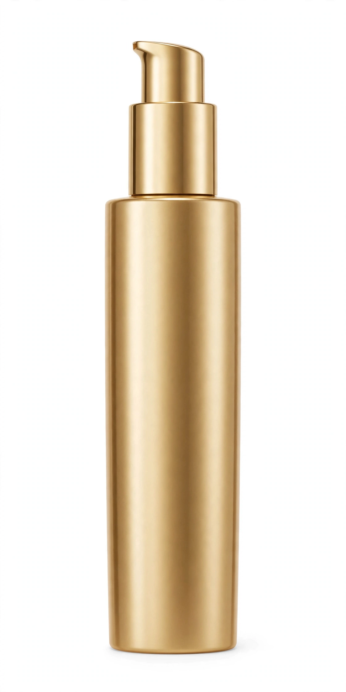

6 Pemahaman Amy Skin Nov 2026
Bagaimana memilih formula serum label pribadi?
Mulailah dengan pasar Anda dan bahan pahlawan Anda, tidak dengan daftar bahan panjang. Pilih satu cerita yang jelas yang mencerahkan, hidrasi atau anti-aging kemudian pilih rumus siap atau rumus kustom yang menceritakan kisah itu, dan setujui sampel sebelum produksi massal.

Apa yang harus Anda putuskan terlebih dahulu?
Tiga hal. Pertama, pasar Anda: UE, USA, Timur Tengah atau tempat lain, karena sertifikasi dan klaim aturan berbeda. Kedua, satu kekhawatiran kulit serum Anda adalah untuk mencerahkan, kekeringan atau ketegasan. Ketiga, bahan pahlawan Anda: Vitamin C untuk mencerahkan, Niacinamida untuk mencerahkan dengan lembut, asam Hyaluronic untuk hidrasi, atau Peptida untuk anti-pemberian.
Siap formula atau formula kustom?
| Option | Ketika cocok | Apa yang diharapkan |
|---|---|---|
| Siapkan formula | Anda ingin peluncuran tercepat | Sudah dikembangkan; langsung ke sampling dan kemasan |
| Formula sendiri | Anda perlu tekstur, aroma atau cerita bahan Anda sendiri | Dikembangkan dengan tim pabrik; membutuhkan lebih banyak waktu |
Kebanyakan merek baru dimulai dengan formula siap perpustakaan rumus kami 10,000+ termasuk 34 fitur rumus di antara mereka sembilan serum dan serum-seperti esensi: Vitamin C, Niacinamide, Asam Hialuronic, Peptide, Wortel, Asam Hialuronic Emas 24K, Retinol Bawah Mata, Essence - Penghalang yang Sedang Diperbaiki dan Ekstrak Bibit Blushwood Berry.
Apa termasuk serum yang bagus?
- Target pasar Anda dan klaim itu memungkinkan
- Anda pahlawan bahan dan cerita yang ingin Anda ceritakan
- Tekstur Anda lebih suka cahaya, kaya, atau di antara
- Format pak: dropper atau botol pompa
- Kuantitas per SKU (MOQ 500–1,000)
Apa yang terjadi setelah Anda memilih?
Anda mengikuti 6-step OEM / ODM proses: singkat, rumus dan sampling, pilot dan persetujuan, produksi massal, QC dan pengujian, pengepakan dan pengiriman. Anda menyetujui sampel sebelum produksi massal . bagaimana sampling bekerja.
Daftar penuh INCI dan konsentrasi akhir dikonfirmasi per pesanan. Tidak ada harga yang tetap yang diterbitkan; harganya dikutip per pesanan.
Dapatkan Penawaran Whats Appus Kita
Selanjutnya: Vitamin C vs Niacinamida → · Semua wawasan →